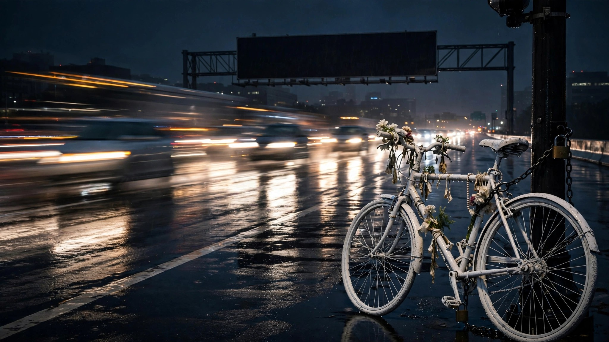

The Federal Government Just Deleted the Word 'Bicyclist' From Its Safety Playbook. 1,148 Died Last Year.

Sometime in early July, the Federal Highway Administration scrubbed five strategies from its "Proven Safety Countermeasures" list, a curated set of 28 evidence-backed recommendations that state and local planners use to decide where federal safety dollars go.[1] Gone: bike lanes, speed safety cameras, variable speed limits, road diets, and appropriate speed limits for all users. Also gone, literally deleted from the section header: the word "bicyclist." In 2025, 1,148 cyclists were killed on American roads, the highest annual count in more than 40 years.[2]
Nobody announced the change. NPR found it by comparing cached pages.[1] The FHWA said it was "taking action to reverse the last administration's policies that decreased lane capacity and increased congestion." Transportation Secretary Sean Duffy had already framed the rationale more concisely on social media: "DEI bike lanes."[3] Then, on July 23, he sent Congress a letter asking lawmakers to "restrict competitive and formula grant funding for bicycle lanes" and to "support removal of existing bike lanes that contribute to congestion."[4]
The agency's own archived research pages, still accessible through the Wayback Machine, quantify exactly what was deleted. Bike lanes reduce crashes by up to 53%, speed safety cameras cut them by 54%, and road diets deliver reductions between 19 and 47%. Variable speed limits lower freeway crashes by up to 34%.[5] Seattle measured a 26% drop in fatalities after implementing the "appropriate speed limits" strategy that no longer appears on the FHWA's list. A federal judge, ruling earlier this year on the 15th Street bike lane case in Washington, D.C., noted that the government "did not submit any data that would contradict" the claim that protected bike lanes reduce collisions, and that DOT counsel acknowledged as much in open court.[6]
Run the math against geography and the scale of the erasure comes into focus. League of American Bicyclists analysis of NHTSA data shows 62% of cyclist deaths with reported speed limits occurred on roads posted at 40 mph or higher, where the probability of surviving a collision drops below half.[7] Apply that proportion to 2025's body count: roughly 712 cyclists killed on roads where lower speed limits, speed cameras, or protected bike infrastructure are the textbook interventions. If bike lanes alone deliver even a conservative 30% crash reduction on those corridors, that represents over 200 preventable deaths per year, each one backed by research the federal government compiled, published, and then took down.
Duffy's rationale collapses the moment you look at the geometry of a lane. Removing a bike lane does not reduce congestion; it removes one cyclist and replaces them with one car, which takes up fifteen times the road space. Every traffic engineer knows this, which is why 80 cities in the National Association of City Transportation Officials already ignore the new FHWA guidance.[6] The research still exists, the archive still exists, and the 1,148 dead cyclists still exist, at least in the database the same agency maintains. What does not exist, as of July 2026, is a federal government willing to say so on its own website.
What you should do: If you commute by bike, check whether your city or state references the FHWA Proven Safety Countermeasures list for infrastructure planning. If it does, the playbook just got five chapters shorter. The archived versions of those removed pages are available at web.archive.org. Advocate locally: the evidence for bike lanes, speed cameras, and road diets has not changed, regardless of whether a federal website lists them. If you drive, give cyclists the full lane when passing on any road posted above 35 mph. That is where 62% of the killing happens.[7]
Sources & References
- Joel Rose, NPR, “Bike lanes and speed cameras disappear from the DOT’s list of proven safety measures,” July 16, 2026. wkyufm.org
- NHTSA early estimates, 2025 traffic fatalities, including cyclist breakdown. Reported via Carscoops, July 12, 2026.
- Fast Company, “The Trump Administration’s war on ‘DEI bike lanes,’” July 28, 2026. fastcompany.com
- Streetsblog USA, “The Last Straw: Duffy Asks Senate To ‘Restrict’ Funding For Bike Lanes,” July 23, 2026. streetsblog.org
- FHWA Proven Safety Countermeasures (archived). Crash-reduction data for removed strategies accessed via Internet Archive. web.archive.org
- Streetsblog USA, “‘Big Brother’ At U.S. DOT: Bike Lanes Aren’t Just ‘DEI,’ They’re Also Unsafe,” July 17, 2026. streetsblog.org
- League of American Bicyclists, “Speed Data Shows Lethal Legal Speed Limits Involved In Most Pedestrian And Bicyclist Deaths,” NHTSA benchmarking report. data.bikeleague.org